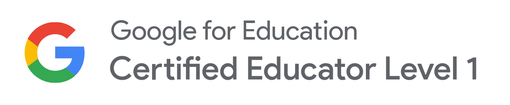
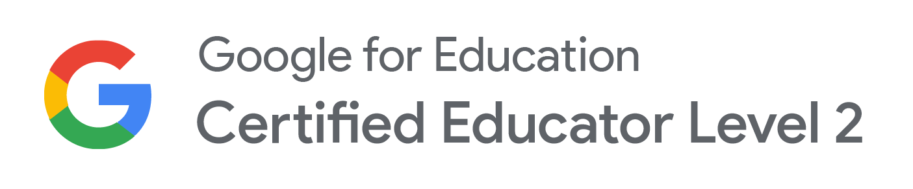
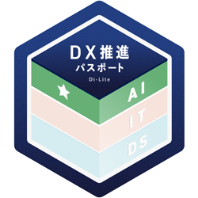
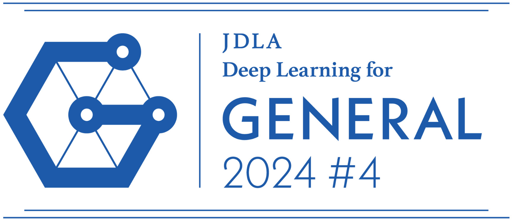

About
私について
「最小の資源で、最大の価値を。」
東京での会社員とフリーランス経験を経て、地元の岡山県へUターンしました。
広報・PR、Web制作、ICT支援など、多岐にわたる現場経験の中で培ったのは、「現場ごとの課題を見抜き、最適な解決策を形にする」柔軟な対応力です。
現在は、リソースの限られる地方の中小企業や小規模事業者様を対象に、"仕組み/solution"と"クリエイション/creation"の両面から事業支援を行っています。
誰もが直感的に使える業務アプリによる効率化や、世界観を伝えるWebデザイン、生成AIの活用まで。
限られた資源だからこそ知恵を尽くし、テクノロジーを「難しいもの」ではなく「人と人をつなぐ温かな架け橋」に変えることで、お客様の事業に最大の価値をもたらすお手伝いをいたします。
専門性
-
01
業務改善パートナー
「なんとなく非効率」を見える化し、誰でも迷わず動ける仕組みに変えていきます。ITツールや生成AIも取り入れながら、無理なく続けられる運用のかたちをご提案します。
-
02
プランナー / ブランディング
「何を、誰に、どう伝えるか」を一緒に企画します。広報・PRからブランディング、イベントの立ち上げまで、届く伝え方を考え、実行までしっかり伴走します。
-
03
Webディレクター / デザイナー
サイトやECサイトの企画・制作・運用を一貫してサポート。世界観の伝わるデザインで、事業の「顔」となるビジュアルをかたちにします。
経歴・経験
-
01
制作会社やテレビ局でのウェブサイト/ECサイトの制作・運用ディレクション、編集
-
02
コンサート/音楽フェスの公式グッズの商品開発、マーチャンダイジング
-
03
広報支援(プレスリリース作成、サイト/紙媒体制作ディレクション、SNS運用、イベント企画等)
-
04
カフェ・イベントスペースの立ち上げ・運営、イベント企画・運営
-
05
小・中学校でのICT支援(授業・校務支援、デジタル機器やネットワーク等の環境整備、校内研修等)
-
06
コワーキングスペース/シェアオフィスでのイベント企画・運営、持ち込み企画の伴走支援、業務効率化のための型化・マニュアル作成
保有資格
- 01Certified
Google認定教育者
- 02Certified
Interactive Advertising Bureau(IAB)公認 Googleデジタルマーケティング基礎
- 03Certified
日本ディープラーニング協会主催 G検定(ジェネラリスト検定)
- 04Certified
日本情報処理検定協会主催 情報処理技能検定試験 表計算1級
- 05Certified
日本情報処理検定協会主催 情報処理技能検定試験 日本語ワープロ検定1級
- 06Certified
日本情報処理検定協会主催 情報処理技能検定試験 文書デザイン検定1級



